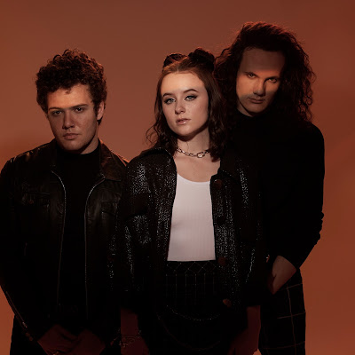

Concrete Castles
Sommaire
Présentation
Concrete Castles est un groupe de rock américain originaire de Erie, Pennsylvanie. Le groupe est composé de Audra Miller (chant), Matthew Yost (guitare), Sam Gilman (batterie). Le groupe a été formé en 2021 par certains membres de First To Eleven et a sorti son premier album en 2021.
Discographie
Albums
Wish I Missed U (2021)
Singles
You Won't See Me Again (2021)
Lucky (2021)
Coup de coeur
Liens
Spotify
Site officiel